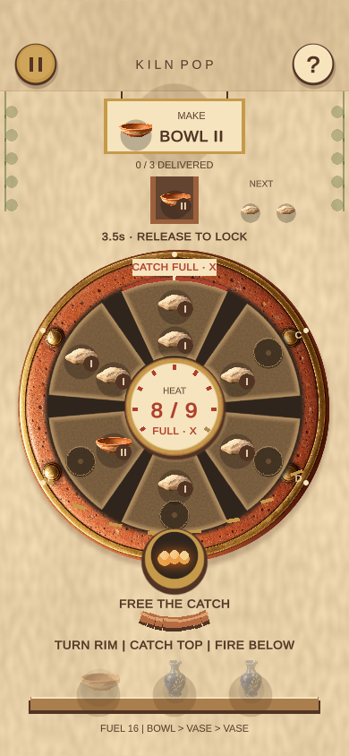

Hextris
Hextris contributors
Borrowed
Rotate one six-sided structure to route arrivals and manage space.
One turn. Two problems.
Turn a pottery kiln to catch clay above and fire matching pieces below. Every rotation helps one station while changing the other.

Two specific mechanisms, combined into one player decision.
Hextris contributors
Rotate one six-sided structure to route arrivals and manage space.
Gabriele Cirulli
Equal values compress into a higher rank, freeing room.
Reference research captures · framed for clarity; click for full images. Source claims, credits & provenance ↗
The mutation changes what you must weigh up on each move.
Example: heat 6/9; order III; rank I arrives next. Both stations resolve on the same beat.
Illustrative rule diagram · selectable comparison, not a game simulation.
Catch I beside I. The opposite pocket holds one bowl, so it cannot fuse.
Catch I beside II. The opposite I + I fires into a bowl and cools the kiln.
One portrait field. One short offline round. Immediate retry.
Next clay + active order
Preview both stations
Catch → fuse → dispatch
Cool down; build the next vase
Design hypotheses to test with you; automated completion does not establish enjoyment.
The best catch and the best firing often disagree.
Two clay pieces become a bowl; bowls become a vase.
Vent an unequal pair to reopen space, at a heat cost.
Can you predict both ends of a turn without losing the rhythm?